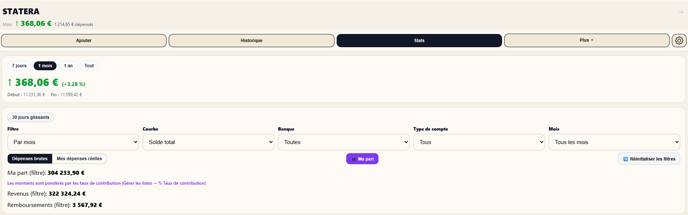
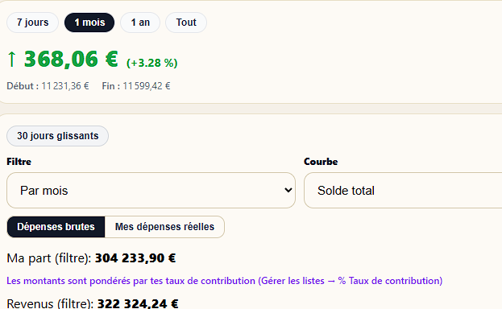
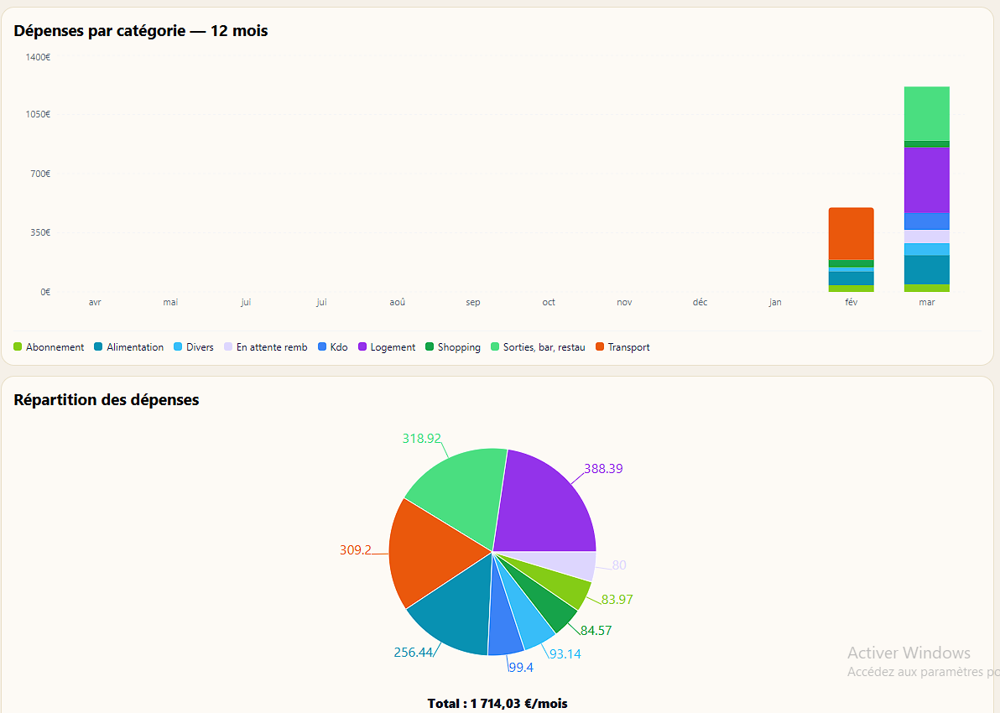
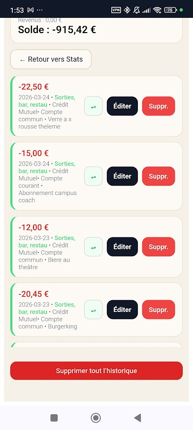
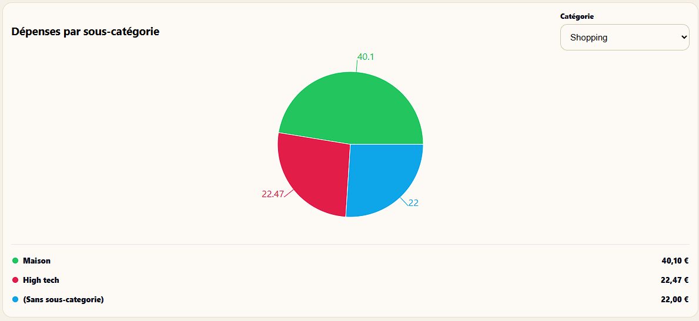
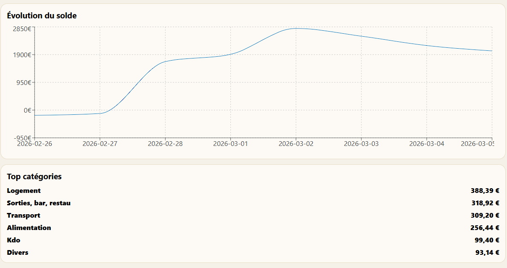

L'onglet Statistiques de Stateri vous donne une vision claire et détaillée de vos dépenses — par période, par catégorie, par compte. Tout ce dont vous avez besoin pour piloter votre budget. Données 100% privées.

Choisissez parmi 4 périodes prédéfinies — 7 jours, 1 mois, 1 an, ou tout l'historique. La variation de votre solde s'affiche instantanément avec le montant et le pourcentage d'évolution.

Un seul bouton pour voir instantanément l'évolution de vos dépenses sur les 30 derniers jours — indépendamment du calendrier.
En scrollant dans l'onglet Statistiques, vous accédez à deux graphiques complémentaires : l'histogramme des 12 derniers mois et le camembert de répartition des dépenses sur la période.

Chaque barre représente un mois, empilée par catégorie de dépense. En un coup d'œil, vous identifiez vos mois les plus chargés et les catégories qui pèsent le plus dans votre budget.
Le camembert affiche la répartition de vos dépenses sur la période sélectionnée. Chaque part correspond à une catégorie, avec le montant affiché directement sur le graphique.

Ici, un clic sur la catégorie Sorties, bar, restau dans le graphique ouvre directement la liste de toutes les dépenses correspondantes — avec le détail de chaque transaction : date, banque, compte, note. Chaque ligne peut être éditée ou supprimée en un tap. Un bouton "← Retour vers Stats" vous ramène instantanément aux graphiques.
Si vous avez créé des sous-catégories dans vos dépenses, Stateri vous permet de plonger encore plus loin dans le détail. Sélectionnez une catégorie et visualisez la répartition de ses sous-catégories.

La courbe d'évolution du solde vous montre précisément comment votre argent évolue sur la période analysée — avec les hausses (revenus entrants) et les baisses (dépenses) clairement visibles.
Juste en dessous de la courbe, Stateri liste vos top catégories de dépenses pour la période, classées par montant décroissant — pour voir d'un coup d'œil où va votre argent.
